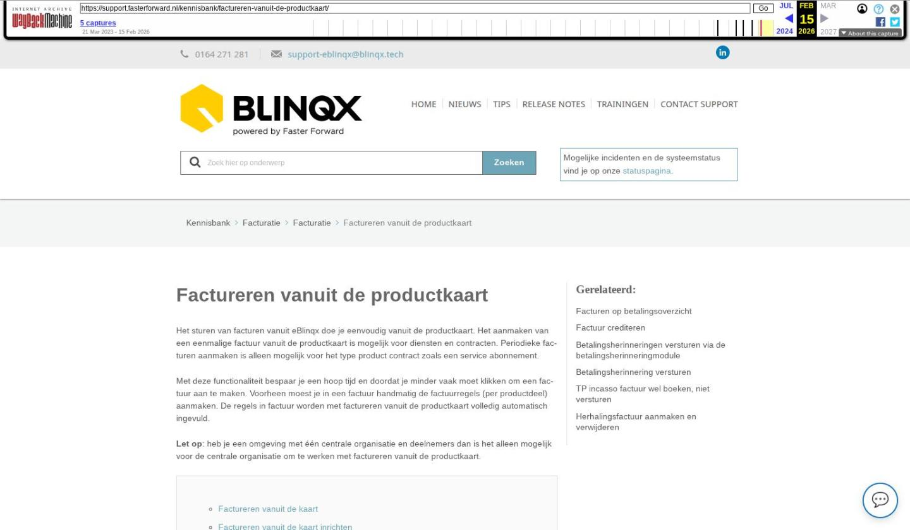

Factureren vanuit de productkaart

Tekstinhoud
Factureren vanuit de productkaart
Het sturen van facturen vanuit eBlinqx doe je eenvoudig vanuit de productkaart. Het aanmaken van een eenmalige factuur vanuit de productkaart is mogelijk voor diensten en contracten. Periodieke facturen aanmaken is alleen mogelijk voor het type product contract zoals een service abonnement.
Met deze functionaliteit bespaar je een hoop tijd en doordat je minder vaak moet klikken om een factuur aan te maken. Voorheen moest je in een factuur handmatig de factuurregels (per productdeel) aanmaken. De regels in factuur worden met factureren vanuit de productkaart volledig automatisch ingevuld.
Let op: heb je een omgeving met één centrale organisatie en deelnemers dan is het alleen mogelijk voor de centrale organisatie om te werken met factureren vanuit de productkaart.
Factureren vanuit de kaart
Factureren vanuit de kaart inrichten
Contract aanmaken
Betaalwijze en verzendwijze
IBAN en mandaat
Voorwaarden factuur aanmaken
Polisonderdeel toevoegen
Facturen aangemaakt
Verdere verwerking van de factuur
Automatisch factureren stopzetten
Producten met offertesysteemstatus Beëindigd
Handmatig factuur aanmaken vanuit de productkaart
Voorlopige omzet boeken (Accrual Accounting)
Beloningen voor deelnemers instellen
Factureren vanuit de kaart
Om facturen automatisch vanuit de productkaart te genereren moet er diverse instellingen juist staan. Je kunt hiervoor onderstaand stappenplan volgen. Het aanmaken van een eenmalige factuur vanuit de productkaart is mogelijk voor diensten en contracten. Periodieke facturen aanmaken is alleen mogelijk voor het type product contract zoals een service abonnement.
Factureren vanuit de kaart inrichten
Wil je gebruik maken van factureren vanuit de kaart? Stuur dan een e-mail naar support-eblinqx@blinqx.tech. Een consultant neemt met jou contact op om dit in te richten.
In de productkaart van het contract moet je aangeven of je dit contract automatisch wilt factureren. Ook voor het eenmalig facturen via het euro-icoon moet dit ingericht zijn anders krijg je de melding ‘Factureren uit de kaart is niet mogelijk, voor één of meerdere productdelen is de optie ‘Factureren vanuit de kaart’ niet geactiveerd.’
De consultant maakt deze producten aan bij het inrichten. Het kan zijn dat je op een later moment zelf nieuwe producten aanmaakt. Ook deze moeten ingericht worden voor factureren vanuit de kaart. Dit inrichten doe je via Beheer – Productbeheer. Hier zoek je het betreffende product op. Je gaat naar het tabblad Inkoop/verkoop en je vinkt ‘Factureren vanuit de kaart aan’ aan. Daarnaast moeten de velden BTW en betalingsfrequentie zijn gevuld.
Contract aanmaken
Om periodieke facturen aan te maken voor bijvoorbeeld een service-abonnement moet er in het dossier een contract aanwezig zijn. Het periodiek factureren (en onderstaande stappen) kan alleen bij het type product contract, niet bij een dienst. Maak in het klantdossier een contract aan via ‘Nieuw product’. Vul in het linkerdeel alles zo volledig mogelijk in.
Betaalwijze en verzendwijze
In het linkerdeel geef je ook aan wat de betaalwijze en verzendwijze wordt van de factuur. Indien je bij de verzendwijze kies voor ‘Geen’ dan wordt de factuur niet verzonden, maar deze wordt wel aangemaakt. Zet je automatisch factureren op ‘Ja’ dan worden er automatisch facturen gegenereerd.
IBAN en mandaat
Het is belangrijk dat de klant als debiteur is ingericht. Voor betaalwijze incasso is het belangrijk dat het IBAN en mandaat correct staat ingevuld.
Voorwaarden factuur aanmaken
Als je automatisch factureert vanuit de productkaart, zie je de laatste factuurdatum en de eerstvolgende factuurdatum. Zet je muis op het ℹ️-icoon om te zien wanneer de facturen worden gegenereerd.
Het is mogelijk om de facturen eerder klaar te zetten dan de datum die staat bij volgende automatische factuurdatum (zie hieronder bij Facturen aanmaken). Ondanks dat de facturen eerder worden aangemaakt zal de volgende automatische factuurdatum pas verspringen naar de volgende datum als de datum in dat veld geweest is. Stel dat de volgende automatische factuurdatum 01-06-2023 is en de facturen zijn aangemaakt op 25-05-2023 dan zal de volgende automatische factuurdatum pas verspringen naar 01-07-2023 als 01-06 gepasseerd is.
Onder het ℹ️-icoon staan de voorwaarden, waaraan het product moet voldoen om de factuur te kunnen genereren. Deze voorwaarden zijn:
Let op: polisonderdelen met een hoofdvervaldatum in het verleden zullen dus niet meegenomen worden in de facturatie.
Let op: producten met een startdatum op de eerste van de maand zijn een uitzondering. Is de startdatum op de eerste van de maand en valt deze in de toekomst dan wordt hier toch een factuur voor aangemaakt, ondanks dat de datum in de toekomst staat. Stel dat je contracten opvoert niet op de eerste dag van van de maand dan wordt de factuur pas de volgende maand aangemaakt. Wil je voor de eerste maand toch een factuur? Dan kan je deze handmatig aanmaken via het euro-icoon.
Polisonderdeel toevoegen
Voeg een rechterdeel toe met de gewenste verkoopprijs en klik wederom op opslaan. Hier kan je ook aangeven of het abonnement automatisch verlengd dient te worden. Dit bij ‘Looptijd’ en ‘Verlengen/aflopend’. Zet je deze op ‘Verlengen’ dan zal op de hoofdvervaldatum automatisch een abonnement verlengd worden en de hoofdvervaldatum aangepast worden.
Facturen aangemaakt
Wanneer bovenstaande correct staat ingesteld, zullen de facturen automatisch gegenereerd worden. In de administratie kan je instellen wanneer de facturen daadwerkelijk gegenereerd worden. Dit via Financieel – Administraties onderhoud – betreffende administratie – tabblad Algemeen – Automatisch factureren. Hier geef je aan hoeveel dagen er vooruit gefactureerd moet worden.
Het aanmaken van de facturen is een nachtelijk proces.
Indien je vandaag een nieuw contract aanmaakt, het aantal dagen vooruit factureren is al gepasseerd en de startdatum valt nog voor de volgende automatische factuurdatum dan wordt ook hier een factuur van gemaakt. Deze factuur wordt niet direct aangemaakt. Deze zal pas de volgende dag zichtbaar worden vanwege het nachtelijk proces. Voorbeeld: stel dat de eerst volgende factuurdatum op 01-06-2023 staat. Het aantal dagen vooruit factureren staat op 4 dagen vooruit. Dan wordt de factuur aangemaakt op 28-05-2023. Jij maakt op 29-05-2023 een nieuw contract aan met als startdatum ook op 29-05-2023. Dan zal het nachtelijk proces een factuur aanmaken die hoort bij periode 01-06-2023. Deze factuur zal zichtbaar zijn op 30-05-2023.
Verdere verwerking van de factuur
Indien het abonnementen/contracten betreft dan zullen de facturen automatisch goedgekeurd en geboekt worden. De volgende stappen zijn afhankelijk van de gekozen factuur verzendwijze. Staat deze op ‘Geen’ dan wordt de factuur aangemaakt, maar er volgen geen verdere acties. Indien de verzendwijze staat op ‘E-mail’ dan wordt er een e-mail inclusief factuur direct verstuurd naar de klant. Als de verzendwijze staat op ‘Post’ dan krijgt de factuur de status ‘Gereed voor verzending: Post’. Vanuit het facturenoverzicht kan je de facturen met deze status filteren om vervolgens via de ‘Actiesknop’ de facturen te printen. Ook kan je de factuur via de workflow vanuit het facturenoverzicht of vanuit het dossier afdrukken. Let op: bovenstaande wordt geregeld via workflow. Wanneer jouw workflow anders is ingericht kunnen de stappen afwijken. Het is bijvoorbeeld ook mogelijk om de e-mail eerst als concept klaar te zetten.
Wanneer je bij de ‘Betaalwijze’ hebt gekozen voor ‘Incasso’ zullen de de openstaande facturen/bedragen zichtbaar worden bij ‘Incasso- en excassobestanden maken’. Hier kan je een incassobatch maken om de facturen daadwerkelijk te incasseren.
Automatisch factureren stopzetten
Wil je dat het product niet meer automatisch wordt gefactureerd dan zet je links in de productkaart ‘Automatisch factureren’ op ‘Nee’.
Producten met offertesysteemstatus Beëindigd
Vanuit producten met de offertesysteemstatus Beëindigd worden geen automatische facturen aangemaakt. Deze facturen zijn te herkennen aan het rode icoon:
Handmatig factuur aanmaken vanuit de productkaart
Het is ook mogelijk om handmatig vanuit de productkaart een factuur aan te maken. Dit kan je doen voor diensten en contracten. In de kaart klik je op het icoon ‘Factuur aanmaken’. Het systeem maakt nu een factuur aan en opent het tabblad Financieel -Factuur. Gebruik de workflow om de factuur goed te keuren en te verwerken.
Deze workflow is niet standaard en moeten wij voor je inrichten. Heb je interesse Stuur dan een e-mail naar support-eblinqx@blinqx.tech.
Voorlopige omzet boeken (Accrual Accounting)
Daarnaast is het mogelijk om met deze methode je omzet te boeken op het moment van het leveren van een dienst en niet op de dag van het goedkeuren van de factuur. Dit heet Accural Accounting.
Hiermee boek je een voorlopige omzet op een tussenrekening (grootboekrekening) bijvoorbeeld ‘Nog te factureren’.
Lees hier meer over Accrual Accounting.
Beloningen voor deelnemers instellen
Betreft het een omgeving met één centrale organisatie en deelnemers dan kan alleen de centrale organisatie werken met factureren vanuit de kaart. Het is wel mogelijk om beloningen toe te voegen voor deelnemers en adviseurs. Dit is handige voor centrale organisaties (CO’s) die werken met deelnemers. Je stelt hiervoor een vaste verhouding in tussen deelnemer en adviseur in te stellen. Bijvoorbeeld 20% voor de deelnemers en 10% voor de adviseur. De boeking vindt dan plaats op de RC deelnemer.
Lees hier meer over het instellen van beloningen voor deelnemers.
Laatste update: 6 januari 2026
Was deze informatie nuttig?
Ja Nee